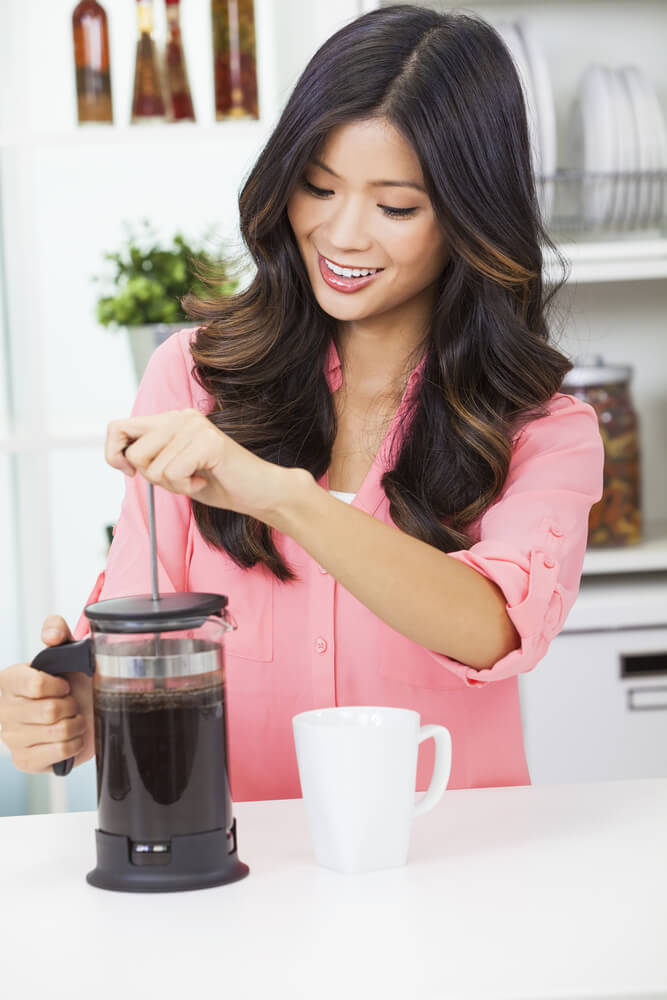
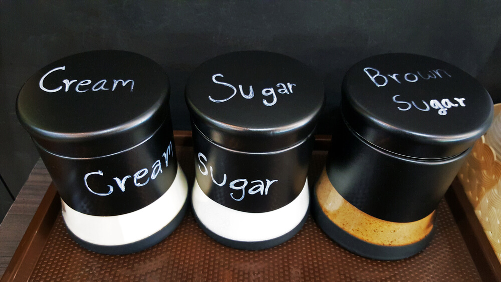

Begini Cara Membuat Kopi Enak Untuk Orang Dalam Jumlah Banyak
Nggak ada salahnya kok, TOP Lovers, kalau kamu akan mengadakan acara di rumah dan menyajikan kopi untuk para tamu yang hadir. Namun membuat satu gelas kopi yang enak saja bukanlah tugas yang mudah, apalagi jika harus membuat kopi dalam jumlah yang banyak tapi rasanya tetap nikmat? Hal ini mungkin jadi tantangan tersendiri. Lalu, bagaimana sih, cara membuat kopi enak yang memiliki rasa konsisten untuk orang banyak? Yuk, cek tips berikut.
Pertama, menyiapkan kopi ketika tamu baru datang. Hal ini penting karena jika kamu menyiapkan kopi kamu sebelum para tamu hadir, kopi yang telah kamu siapkan bisa saja mengalami perubahan rasa. Kedua, memilih cara membuat atau menyeduh kopi yang terbaik. Kalau biasanya saat membuat kopi untuk diri sendiri, kamu bisa menggunakan mesin seperti aeropress, atau manual brewing maka pilihan yang paling cocok untuk membuat kopi bagi orang banyak adalah dengan menggunakan chemex, mesin french press, atau coffee maker. Sehingga kamu tidak kewalahan untuk menyiapkan satu per satu kopi berulang kali.

Ketiga, Kalau kamu menggunkan french press atau chemex untuk membuat kopi, langsung sediakan juga wadah atau gelas untuk kopi yang kamu buat. Untuk french press kamu harus menuangkan kopi yang telah kamu buat langsung ke dalam gelas yang telah kamu sediakan, karena kalau terlalu lama berada di dalam mesin french press, kopi akan menjadi terlalu pekat. Kalau kamu ingin menyajikan kopi panas pada chemex, sebaiknya siapkan termos yang bisa menjaga suhu panas untuk waktu yang lama.

Keempat, mempersiapkan bahan-bahan tambahan. Mungkin tidak semua tamu yang kamu undang menyukai kopi hitam atau mungkin ada juga yang tidak menyukai kopi dengan tambahan creamer. Oleh karena itu kamu harus siap siaga dan menyediakan berbagai pelengkap additional, seperti gula, susu, atau creamer.
Itu tadi tips penting yang perlu kamu perhatikan saat membuat kopi untuk banyak orang. Sekarang coba deh, kamu latihan menggunakan tips-tips di atas. Supaya kalau kamu punya acara dengan jumlah tamu yang banyak dan perlu menghidangkan kopi, kamu nggak akan kewalahan, TOP Lovers. Selamat mencoba!